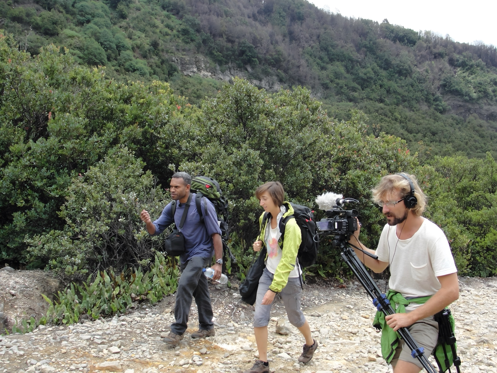

Longs et Courts métrages
Des Ailes pour la Science
Embarquez à bord du Virus, un planeur à moteur bourré de technologies, avec Clémentine et Adrien, pour le premier tour du monde en ULM dédié à la science. Du cercle arctique aux volcans d'Indonésie, de la Patagonie aux déserts d'Australie — un an de vol, 54 000 km et une quinzaine de missions scientifiques. Série documentaire produite par Universcience et Gedeon Programmes.